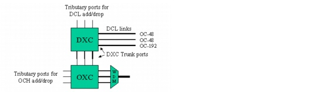
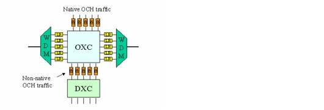
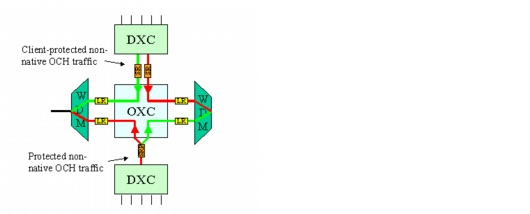
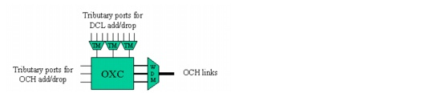

Concepts and Models > Node Modeling Capabilities in SP Guru Transport Planner > SONET/ Optical Nodes: DXC + OXC
SONET/ Optical Nodes: DXC + OXC
An EOCC node can cross-connect both SONET and optical traffic. Therefore the EOCC node is equipped with a DXC and an OXC by default. This node type has the following characteristics:
- DXC—Within the DXC, traffic can be switched to the STS-1 level—or STM-1 level for SDH traffic—to the tributary ports (for local add/drop) and the physical and logical DCL links (for grooming). At the DXC tributary ports, local SONET traffic is add/dropped. The DXC trunk ports terminate both physical DCL trunks (to an ECC node) and logical DCL trunks (between two EOCC nodes)—that is, as non-native OCH connections that terminate in the node. These trunk ports (for logical DCL links) interconnect with the OXC tributary ports.
- OXC—The OXC switches wavelengths between different WDM line systems, or between the OXC tributary ports and the WDM line systems. For non-native OCH connections, the OXC tributary ports are connected to the DXC trunk ports. Separate OXC tributary ports (which do not interconnect with the DXC trunk ports) are used for native OCH connections. OXC trunk ports interconnect with the WDM line system wavelengths of the OCH links. These links connect to EOCC or OCC nodes and terminate in the connected node.
Figure 2-26 DXC + OXC in EOCC Node

Native Traffic
Native OCH traffic contains wavelengths that are not available for routing SONET/SDH traffic; in the layered view, native OCH connections are not trailed to DCL links. These connections do not terminate at the DXC of its end nodes—as is the case for non-native connections—but occupy a tributary OXC port only.
Figure 2-27 Native and Non-Native Traffic on OXC + DXC (Opaque Scenario)

Protection Options
OCH traffic can be client-protected or non-client-protected (much like an OCC node with an OXC). For native traffic, the situation is the same as for an OCC. For client-protected, non-native OCH traffic, the client is the SDH layer, and the protection switching is done by the DXC; this requires two DXC trunk ports. For non-client-protected, non-native traffic, only one trunk port is required at the DXC and the protection transponder is used for the protection switching. In both cases (client-protected or non-client-protected), two OXC tributary ports are required.
Figure 2-28 Impact of Client Protection on Non-Native OCH Traffic

Grooming
Grooming is important for transporting SONET traffic over the wavelengths of the WDM network. Grooming is the process of mapping SONET traffic to wavelengths efficiently, by switching traffic either at the SONET (DCL) or wavelength (OCH) layer. Grooming requires a switch that can switch traffic down to the lowest traffic granularity.
Only nodes that contain an electrical cross-connect can perform grooming. Therefore, it is not possible to groom in an OCC node. In an EOCC or ECC node, grooming requires a DXC or an IXC. It is not possible to groom in TM node, because the SDH terminal multiplexers do not allow switching transit SONET traffic.
Figure 2-29 TM + OXC Node (Without Grooming)

SONET/SDH Rings
When a SONET/SDH ring is terminated in an EOCC node, behavior within the node differs depending on whether the DCL link that terminates within the node is a physical or a logical link:
- In the case of a physical DCL link (towards an ECC), the behavior in the node is similar to the ECC.
- In the case of a logical DCL link (towards an EOCC or OCC), the DLC link is supported by an optical channel. The optical channel is terminated in the node using either an OXC or a patch panel port (you can define this in the Network Properties dialog box, as described in Network Properties).
Note—This section considers the DXC + OXC case, but SP Guru Transport Planner also supports the following combinations: DXC + WP-OXC, DXC + OADM and DXC + Patch Panel.
| Home © 1987-2007 OPNET Technologies, Inc. All Rights Reserved. This software may be covered by one or more U.S. Patents. See complete patent notice in the Legal Notices section. OPNET Support Center |